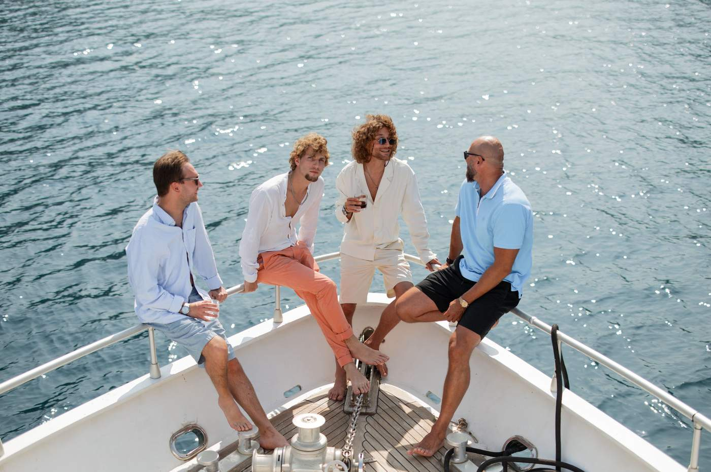

The Ultimate Boka Kotorska Bay Yacht Route
The southernmost fjord in Europe, seven stops, eight hours. A captain's recommended day route through the Bay of Kotor — from Porto Montenegro to Dobrec and back at golden hour.

The Blue Cave in Montenegro: why timing it for 11–12 matters
The Blue Cave lights up for two hours a day. From 11 to 13. After — it's a grey grotto. Why tourist boats arrive at three, and why we always leave at 9.

4 hours on a yacht from Tivat for €2,200: what's in, what's not, and is it worth it
€2,200 for 4 hours means €550 per hour for the whole yacht (up to 16 guests). What's included, what's not, and when 6 hours is the better call.

5 anchorages on the Montenegrin coast where tourist boats don't go
Plavi Horizont, Žanjic, a secret beach past Sveti Stefan, Bigova — five anchorages a captain finds when he's tired of crowds.

Sunset Champagne: Why Golden Hour on the Bay Is the Defining Moment of the Charter
There's a moment — around 7pm in late June — when the Orjen mountains cast a warm amber glow across the entire Bay of Kotor. The water turns to liquid gold, and time seems to slow down. Guests often say the return journey is the highlight of the day.

From Sea to Grill: BBQ at Anchor in a Cove
Nothing tastes better than freshly grilled fish with the salt air on your face and the mountains of the Bay of Kotor as the backdrop. The onboard grill is the heart of every charter — where food, laughter, and the open sea come together.

Yachting with kids in Montenegro: what to bring, what to expect, what not to worry about
Which age fits which charter length, what's on board for kids, how we plan the day around their rhythm. Plus what we do when seasickness hits.

June or September: which month is best for a Montenegro yacht charter
Water temperature, crowds, wind, prices, sunsets — eight parameters comparing June and September. With a note about July and August at the end.

Oysters and Prawns in the Bay of Kotor: where to buy and why from a yacht
In Kamenari oysters come to your yacht. At Miloš you grab live prawns from the pier. Local farms, prices, seasons — a captain's gastro guide.

Submarine Docks and Mamula Fortress: history on the Blue Cave route
Yugoslav submarine tunnels and a 19th-century Austro-Hungarian fortress that became an Italian camp, then a luxury hotel. The history most boats pass without telling.